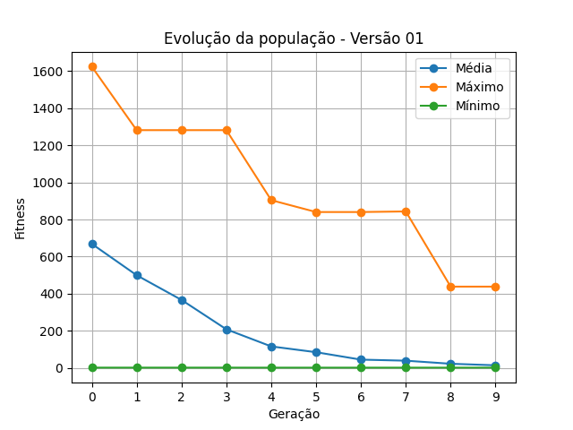
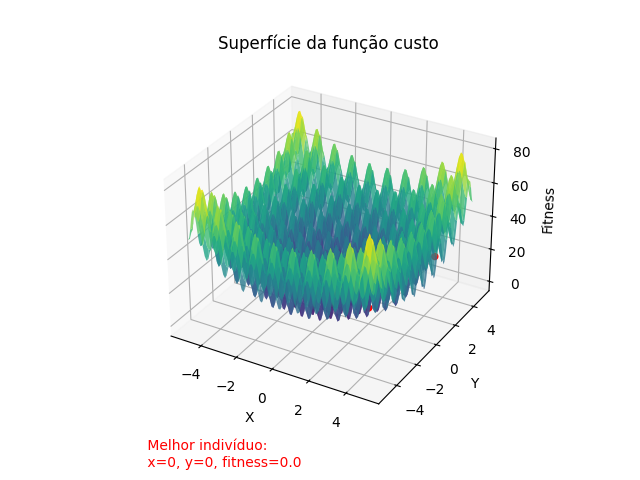
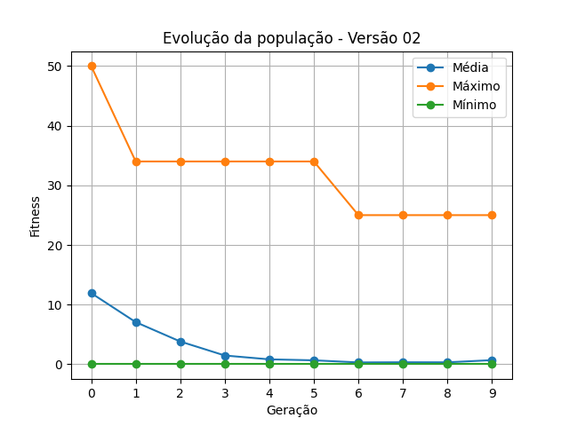
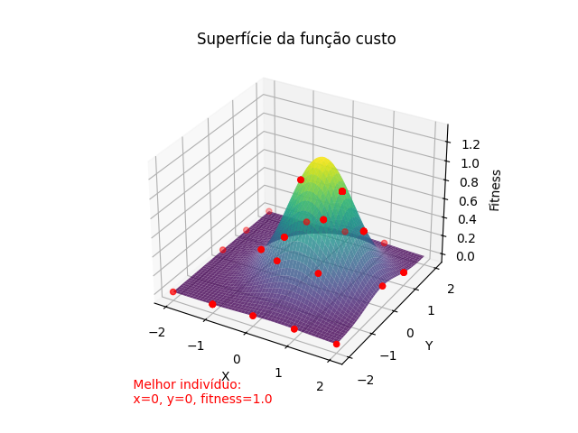
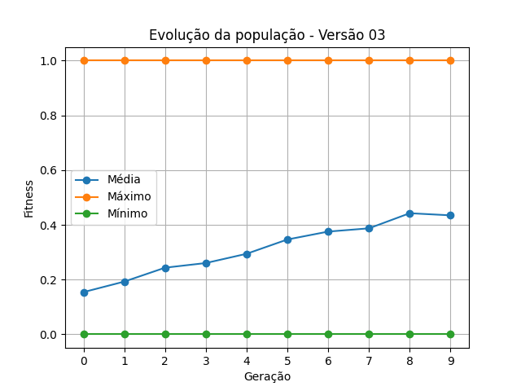

git clone https://github.com/aasjunior/ldm_algoritmo_genetico.git
pip install -r requirements.txt
src e execute:python main.py
from versions.version_01 import version_01
from versions.version_02 import version_02
from versions.version_03 import version_03
from helpers.exception import generate_log
import numpy as np
import traceback
def main():
# Gera um número aleatório no intervalo de 20 a 100
size = np.random.randint(20, 101)
# Calcula n_childrens como 70% de size
n_childrens = int(0.7 * size)
n_generations = 10
readme = '../README.md'
plot_imgs = 'docs/plot'
try:
version_01(size, n_childrens, n_generations)
version_02(size, n_childrens, n_generations)
version_03(size, n_childrens, n_generations)
print(f'\nA imagem de cada plotagem esta sendo salva no diretório {plot_imgs}. A analise do algoritmo e seus resultados podem ser observados em: {readme}')
print(f'Obs: No VSCode, para melhor visualização do README, usar o comando CTRL + SHIFT + v.\n')
except Exception as e:
print(f'Ocorreu um erro:\n{e}\nÉ possivel visualizar mais detalhes em: error_log.txt\n')
generate_log(e, traceback.format_exc())
if __name__=='__main__':
main()
A cada execução do código principal, é gerado um relatório com os resultados de cada versão em: src/docs
CTRL + SHIFT + v.- docs/
- results_01.md
- results_02.md
- results_03.md
Codificação: Decimal.
Intervalo: -500 a 500.
População inicial: 20 indivíduos
Tamanho da prole: 14 indivíduos (equivalente a 70% da população inicial).
Função custo (fitness):
$$ \text{minimizar } z = 837,9658 - \sum_{i=1}^2 i \cdot \sin(\sqrt{i}) $$
from model.GeneticAlgorithm import GeneticAlgorithm
import numpy as np
def modulo(x):
return np.where(x < 0, -1 * x, x)
def calc_xi(x):
return (x * np.sin(np.sqrt(modulo(x))))
def version_01(size, n_childrens, n_generations, average_fitness=False):
save_docs = not average_fitness
try:
fitness_v1 = lambda x1, x2: 837.9658 - calc_xi(x1) - calc_xi(x2)
algorithm = GeneticAlgorithm(size=size, n_childrens=n_childrens, n_generations=n_generations, mutation=1, interval=[-500, 500], fitness=fitness_v1, for_max=False, version='01', save_docs=save_docs)
algorithm.init()
if average_fitness:
return np.mean(algorithm.fitness_avgs)
except Exception as e:
raise f'Erro na execução da versão 01:\n{e}\n'

Codificação: Decimal.
Intervalo: -5 a 5.
População inicial: 20 indivíduos
Tamanho da prole: 14 indivíduos (equivalente a 70% da população inicial).
Função custo (fitness):
$$ \text{minimizar } z = 20 + x^2 + y^2 - 10 \cdot (\cos(2\pi x) + \cos(2\pi y)) $$
from model.GeneticAlgorithm import GeneticAlgorithm
import numpy as np
def version_02(size, n_childrens, n_generations, average_fitness=False):
save_docs = not average_fitness
try:
fitness_v2 = lambda x, y: 20 + (x**2) + (y**2) - 10 * (np.cos(2*np.pi*x) + np.cos(2*np.pi*y))
algorithm = GeneticAlgorithm(size=size, n_childrens=n_childrens, n_generations=n_generations, mutation=1, interval=[-5, 5], fitness=fitness_v2, for_max=False, version='02', save_docs=save_docs)
algorithm.init()
if average_fitness:
return np.mean(algorithm.fitness_avgs)
except Exception as e:
raise f'Erro na execução da versão 02:\n{e}\n'


Codificação: Decimal.
Intervalo: -2 a 2.
População inicial: 20 indivíduos
Tamanho da prole: 14 indivíduos (equivalente a 70% da população inicial)
Função custo (fitness):
$$ \text{maximizar } z = e^{x - (x^2 + y^2)} $$
Observação: A função custo original era:
$$x^{-(x^2 + y^2)}$$
No entanto, essa função apresentou desafios na implementação em Python devido a problemas com números complexos e divisão por zero, especialmente durante a plotagem da superfície da função de fitness. Embora os cálculos de fitness dos indivíduos estivessem corretos, os erros ocorreram durante a geração da superfície de plotagem. Para contornar esses problemas e garantir a robustez do algoritmo, a função custo foi modificada para
$$e^{x - (x^2 + y^2)}$$
Essa nova função mantém características importantes da função original, mas evita os problemas mencionados.
from model.GeneticAlgorithm import GeneticAlgorithm
import numpy as np
def safe_fitness_v3(x, y):
return np.exp(x-((x**2)+(y**2)))
def version_03(size, n_childrens, n_generations, average_fitness=False):
save_docs = not average_fitness
try:
fitness_v3 = np.vectorize(safe_fitness_v3)
algorithm = GeneticAlgorithm(size=size, n_childrens=n_childrens, n_generations=n_generations, mutation=1, interval=[-2, 2], fitness=fitness_v3, for_max=True, version='03', save_docs=save_docs)
algorithm.init()
if average_fitness:
return np.mean(algorithm.fitness_avgs)
except Exception as e:
raise f'Erro na execução da versão 03:\n{e}\n'


Executar:
C:/../ldm_algoritmo_genetico/src> python average_fitness.py
Realiza dez execuções das versões 01, 02 e 03 do algoritmo genético, retornando a média fitness de cada versão nas dez execuções e um gráfico apresentado a média durante cada execução:
Conforme observado nas três versões do algoritmo, a range do intervalo de valores de cada versão implica diretamente na taxa de convergência da população, sendo necessário um número maior de gerações para se alcançar o mais próximo da solução ótima. Sendo assim, com o número de gerações especificado (10), as versões 02 e 03 do algoritmo alcançaram valores mais próximos da solução ótima.
Este é um trabalho acadêmico realizado como tarefa da disciplina de Laboratório/Computação Natural no 5º Semestre de Desenvolvimento de Software Multiplataforma